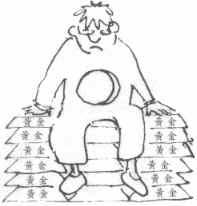

当我在Google搜索用git做博客的时候我看到github提供了免费静态页面服务，而且提供Jekyll工具，允许用户用轻量级标记语言（比如Markdown）来写文章，然后生成博客页面。同类的工具还有Octopress。但用的是Ruby语言，在windows下安装环境特别麻烦。因我比较喜欢用Python，再继续搜索，看到了Pelican，只支持Python2.7以上版本，把本地的Python版本更新到2.7版本，好不容易安装好了Pelican环境，但发现Pelican用Makefile来管理项目，而Makefile在Windows下就是一个恶梦。最后看到了Nikola，按照官方文档很快就上手了，而且默认的样式还是特好看的，所以就最终选择了Nikola来建立静态博客。
在Nikola的有一篇文章Tutorial by Tim van der Linden，正好解决了我对Nikola的一些问题，为了日后查阅方便，也为了能让更多母语是中文的网络爱好者认识Nikola，故翻译了这篇文章。
首先，非常感谢Nikola创作者Roberto Alsina，给这篇文章很高的评价，并将其嵌入到Nikola文档中！
当我设计Shisaa.jp的时候我花一些时间思考用怎么样的“后端”。什么样的系统建站...使用CMS吗？ 我使用Drupal有丰富的经验，这可能是我的首选......但熟悉Drupal的，也知道一些难以忽视的事实：
因此，不用Drupal，那用什么呢？Wordpress, Joomla...？这...永远...不可能，它们都是用PHP做后端的语言。
好，不用PHP驱动系统...我更喜欢用Python，所以可能是Plone, Pylons, Pyramid, ...？
可能……
Markdown 的目标是实现「易读易写」。
可读性，无论如何，都是最重要的。一份使用 Markdown 格式撰写的文件应该可以直接以纯文本发布，并且看起来不会像是由许多标签或是格式指令所构成。Markdown 语法受到一些既有 text-to-HTML 格式的影响，包括 Setext、atx、Textile、reStructuredText、Grutatext 和 EtText，而最大灵感来源其实是纯文本电子邮件的格式。
总之， Markdown 的语法全由一些符号所组成，这些符号经过精挑细选，其作用一目了然。比如：在文字两旁加上星号，看起来就像*强调*。Markdown 的列表看起来，嗯，就是列表。Markdown 的区块引用看起来就真的像是引用一段文字，就像你曾在电子邮件中见过的那样。
Markdown 语法的目标是：成为一种适用于网络的书写语言。
Markdown 不是想要取代 HTML，甚至也没有要和它相近，它的语法种类很少，只对应 HTML 标记的一小部分。Markdown 的构想不是要使得 HTML 文档更容易书写。在我看来， HTML 已经很容易写了。Markdown 的理念是，能让文档更容易读、写和随意改。HTML 是一种发布的格式，Markdown 是一种书写的格式。就这样，Markdown 的格式语法只涵盖纯文本可以涵盖的范围。
你们愿意人怎样待你们，你们也要怎样待人。——路加福音六章三十一节
无论是玩游戏、开车或者做个可口的小菜，要成功又安全，一定得守某些规则。
我清楚记得，几年前，家宅附近马路扩大，从两线行车变成四线。在扩建期间，马路上划的那些白线没有了。有一晚，两辆车迎头相撞，死了五个人；原因是那条分开左右行车道的中央白线没有了，驾车的人失去了可循的“规则”。
圣经教训我们，基督徒有个不断生长的生命。你重生 了，生在天父的家里。我与妻子露丝现有孙儿女十六人，每个孩子都是我们的珍宝；天父眼中的你也是这样。他盼望你在基督里长大成人。要是你长来长去仍是婴儿 模样，成了一个灵性上的侏儒，那不仅违反自然律，也不合上主的旨意。《彼得后书》三章十八节劝勉基督徒一定要有长进，也就是灵性生命应该不断长大，恩典和 知识日有增加，做个成长的基督徒。
天天读圣经
基督徒要灵性健康，生长顺畅，不断长进，一定得遵行某些守则。
touch事件是iOS中最重要的事件。
Apple的官方文档Handling Events和 Safari CSS Visual Effects Guide是很好的开发指南，但是里面的内容显然是针对初学者的，我在这里补充一下。
另外，Apple开发者中心有很多不错的HTML5教程与资源，例如HTML5离线存储，CSS动画，CSS 3D变换等，有兴趣的可以了解一下。 http://developer.apple.com/library/safari/navigation/
自从chrome网上应用店出来后，Chrome插件就无法下载插件，必须在线安装，安装后又自动把CRX文件删除，而且是那么的迅速...
以下是下载离线插件包的方法：
每个Google Chrome扩展都有一个固定的ID，例如
https://chrome.google.com/webstore/detail/adblock/gighmmpiobklfepjocnamgkkbiglidom
上面是一个Chrome扩展的完整URL，
在https://chrome.google.com/webstore/detail/adblock/之后的一串字符就是扩展的ID了。
即：gighmmpiobklfepjocnamgkkbiglidom
把这个扩展的ID复制下来。
人生在世，最叫人振奋的事情，莫如：成功的人际关系——父子、夫妇、爱侣、朋友等。
有人以为基督教信仰不外乎一大堆教义、戒律、规条，但其实基督教信仰的精髓在乎——在乎一个人，而不仅仅是一套哲学理论。基督教信仰所着重的关系，是人世间最重要的关系——人与造物主的关系。耶稣说首要的诫命是全心爱神，其次是爱人如己——两条诫命都涉及关系。
你我受造于世，就是为了与神建立关系。除非我们与神复合，否则总会觉得生命欠缺一点什么。世人常常感到空虚无助，就是这个缘故。有一个摇滚乐手这样形容他内心的感受：“我心里，空虚难受。”
有一个家庭主妇写信给我，说她“心中有一大片空白”；另一个女孩说她“灵魂穿了一个大洞。”

世人用各种方法来填补心中的空洞。有人希望用钱填补——可惜钱财不能满足人心。已故希腊船王奥纳西斯(Aristotle S.Onassis)是世界首富之一，临终前说过这样的话：“人即使拥有万贯家财，也不能满足人心的需求。”
又有人吸毒、酗酒、滥交。有一个女孩告诉我说：“这些事可以带来一时的快感，可是过后只会觉得更空虚。”又有人朝夕工作，醉心音乐、拼命运动、竞逐名声——这些事本身并无不妥，但不能满足人内心的饥渴。
人就算得着乐人世界最亲密的关系，也不足以填满“心里头的空虚”！
人受造原是为了与神在爱中合一，人若持续与神不和好，心里总不会感到满足。
按照新约圣经的说法，人心感到空虚，因人背弃了神。
耶稣说：“我就是生命的粮。”(约 6:35) 是的，只有耶稣可以使我们的心灵得满足，因为惟有耶稣可以帮助我们与神重修旧好。